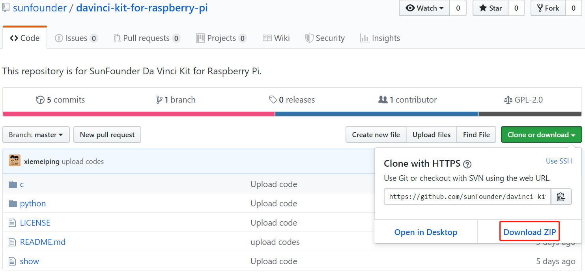

Laden Sie die Kode herunter¶
Beachten Sie vor dem Herunterladen des Codes, dass der Beispielcode NUR unter Raspberry Pi OS getestet wird. Wir bieten zwei Methoden zum Download an:
Methode 1: git clon verwenden (empfohlen)
Melden Sie sich bei Raspberry Pi an und wechseln Sie dann das Verzeichnis in /home/pi.
cd /home/pi/
Bemerkung
cd, um vom aktuellen Pfad in das beabsichtigte Verzeichnis zu wechseln. Informell geht es hier zum Pfad /home/pi/.
Klonen Sie das Repository von GitHub.
git clone
https://github.com/sunfounder/davinci-kit-for-raspberry-pi.git
Methode 2: Laden Sie den Kode herunter.
Laden Sie den Quellcode von github herunter: https://github.com/sunfounder/davinci-kit-for-raspberry-pi
